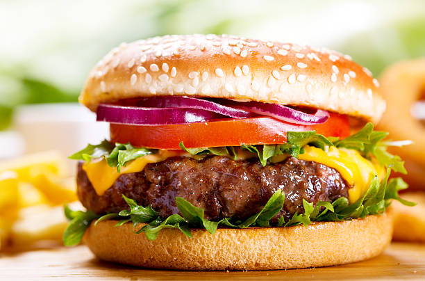

Home
Burger

Description
A burger is a sandwich with a cooked meat patty inside a soft bun, often topped with cheese, lettuce, tomato, and sauce. It’s quick, filling, and can be customized any way you like.
Ingredients
- Burger buns
- Ground beef (or chicken)
- Cheese slices
- Onion & garlic
- Lettuce
- Tomato slices
- Onion slices (optional)
- Ketchup or mayonnaise
- Salt & pepper
Steps
- Make the patty: Mix ground meat with salt and pepper, shape into patties.
- Cook the patty: Fry or grill patties until fully cooked.
- Assemble the burger: Put the patty on the bun, add cheese, lettuce, tomato, onion, and sauce.
- Serve: Put the top bun on and enjoy!